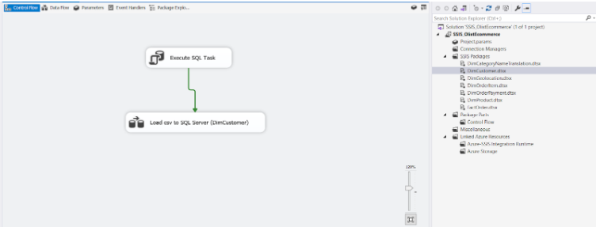

Olist Ecommerce Analytics using Python, SSIS, SQL and Power BI
In this project, I have to build a data warehouse and analyze for Olist Ecommerce sales
Project Summary
Click here to access full of my project on my Github- Input: The dataset contains information on 100.000 orders from 2016 to 2018 made in multiple markets in Brazil.
The data includes information:- Order information (order date, order value, order status, etc.).
- Product information (product name, product price, product description, etc.).
- Customer information (customer name, customer address, etc.).
- Goal:
- Carry out the process of searching and processing data in the e-commerce field to identify suitable data sources during the solution development.
- Build a comprehensive, suitable, and convenient Data Warehouse during the analysis process.
- Visualize data about the business situation of e-commerce businesses.
- Analyze to find important insights to propose optimal solutions in the field of E-commerce.
- Which locations have the most orders?
- Which time period has the most orders?
- Does delivery time affect an order's rating?
- Characteristics of canceled orders.
- Creating a marketing strategy by time and region.
- Focusing on marketing to valuable customer groups.
- Limiting the number of canceled orders.
- In which areas do customers live in?
- When do customers shop during the day?
- Which customer groups need attention?
- Which area are late orders from?
- Average time to ship an order?
- Which month of the year has the most orders delivered late?
- Reduce delivery time in areas with many late orders.
- Increase shipping staff at times when orders increase.
Analytic Application Business question Business Value Sales Performance Analysis Customer Analysis Product Analysis Characteristics of best-selling product groups? Searching for more sellers to expand the variety of products in the same best-sellers categories. Logistic Analysis - Insight and Suggestion
- Sales Performance Analysis
- Which locations have the most orders?
SP, RJ, and MG are the areas with the most orders. - Which time period has the most orders?
People often shop the most on occasions such as the end of the year to prepare for year-end festivals and in May, when the weather begins to change. - Does delivery time affect an order's rating?
According to the Average review score table, it can be seen that the delivery time has an impact on the review score. - Characteristics of canceled orders.
There were 625 canceled orders, the average value of these was at around 175 (higher than the average value of all), most of these were not delivered to customers. SP, RJ, and MG were states with the highest number of canceled orders.
- Customer Analysis
- In which areas are customers concentrated?
Customers distribute the most in 3 states: SP, RJ and MG. - When do customers shop?
Customers shop the most around 10am to 11am every day. - Which customer groups need attention?
Each customer group needs to be treated with different strategies based on their consumption behavior.
Customer groups Customer behavior Marketing strategies Champion High purchasing value, frequent and recently purchased Apply the promotion program according to gold, silver and bronze levels. Potential Loyalist Average purchasing volume, purchasing frequently and recently Upsell or cross sell by introducing combos or promotions when orders reach a certain value Promising Just started shopping recently Promotion for first order or accumulate points based on number of purchases Needing Attention Used to have high purchasing value, buy often but haven't come back for a long time Survey their purchasing experience to find out why they don't return Hibernating Low purchasing value, don't buy regularly and haven't been back for a long time Maintain brand recognition with customers
- In which areas are customers concentrated?
- Product Analysis
The best-selling product category mainly includes household items, furniture used in homes, sports equipment,... - Logistic Analysis
- Which area are late orders from?
Late orders are distributed in the states of AL, MA in the US and areas around Brazil in South America. - Average time to ship an order?
On average, it took 17 days for orders to reach customers. However, shipping time has a large variation. The fastest order was delivered on the same day and the longest order took 7 months for the order to arrive at the right place. - Which month of the year has the most orders delivered late?
At the end of the year and the beginning of the year, there were a lot of orders, leading to more late orders. Most of them were in January, March and November.
- Which area are late orders from?
- Project Duration
- Business Issue Understanding
- Data Understanding
- Exploratory Analysis and Modeling
- Experimental Result and Analysis

- Business Issue Understanding
Olist is a e-commerce company in Brazil, and Olist Store is the largest online marketplace in this country. Olist connects small businesses all over Brazil, these owners will sell their products through Olist Store and then directly deliver to customers by Olist’s logistic partners. When customers buy products from Olist Store, the sellers will be sent a notification to fulfill that order. After receiving the order’s products or arriving at the estimated delivery day, customers will receive a satisfaction survey via email so that they can take notes about their purchase experiences and write some feedback.
Analytic Application Business question Business Value Sales Performance Analysis - Which locations have the most orders?
- Which time period has the most orders?
- Does delivery time affect an order's rating?
- Characteristics of canceled orders.
- Creating a marketing strategy by time and region.
- Focusing on marketing to valuable customer groups.
- Limiting the number of canceled orders.
Customer Analysis - In which areas do customers live in?
- When do customers shop during the day?
- Which customer groups need attention?
Product Analysis Characteristics of best-selling product groups? Searching for more sellers to expand the variety of products in the same best-sellers categories. Logistic Analysis - Which area are late orders from?
- Average time to ship an order?
- Which month of the year has the most orders delivered late?
- Reduce delivery time in areas with many late orders.
- Increase shipping staff at times when orders increase.
- Data Understanding
The dataset contains information on 100.000 orders from 2016 to 2018 made in multiple markets in Brazil.
The data includes information:- Order information (order date, order value, order status, etc.).
- Product information (product name, product price, product description, etc.).
- Customer information (customer name, customer address, etc.).
The data set consists of 9 tables, but here I only uses 8 tables, removing the olist_sellers_dataset table because it is found unnecessarily for the subject.
- Experimental Result and Analysis
- Data processing by Python Click here to access full code of processing Olist data in my Github
- Loading data into Data warehouse
- Importing data in Power BI

After the data has been loaded into SQL Server, I proceed to load the data into Power BI to model the data and prepare for the Validation step. First, I will connect Power BI with SQL to import all tables and views created in SQL Server
I built a Snowflake-style data model, including a central FactOrder olist table and connected to Dim tables, respectively: olist DimProduct, olist DimOderTime, olist DimDate, olist DimCustomer, olist Geolocation, olist DimOrderPayment and olist DimCategoryNameTranslation.

After EDA and preparing the data in Python, I loaded the data into SQL Server using the SSIS tool. While loading data, I edit the appropriate data type and removes columns not needed for analysis and creates additional necessary columns.
Then I created a Date table in the Data warehouse.
Then I create views to Calculate RMF score
Sample data table:
- Experimental Result and Analysis
- Sales Performance Analysis (Order)
From September 2016 to August 2018, the number of Olist’s orders was 98816 with more than 96 thousand delivered orders, accounting for 96.63%. Gross Merchandise Volume (GMV) is calculated as the total value of all orders in all delivery statuses (canceled, delivered, approved, invoiced,...) reaching 13.52 million. Of which, NMV (total value of successfully delivered orders) is 13.16M. Estimated average value that customers are willing to pay for each order is 136.35.
The line graph shows that the number of orders is increasing day by day which means the demand for online shopping increases. It is a great potential for sellers to deploy and promote trade. The number of orders reached a peak at 7.5K in November 2017, which brought 0.98M for sales. It is understandable that at that time people need to purchase to prepare for upcoming festivals, such as Christmas and New Year.
The average review score of orders is 4.09, in which the orders with the highest rating are those that are delivered early (4.29) and on time (4.4). Orders that have low ratings mainly belong to the group of orders that are delivered late or have not been delivered.
The products that consumers buy the most in the bed_bath_table category are household’s appliances and items. These are the things they need to renew at the end of the year. In 2018, people's willingness to pay was highest in May (0.97M) for popular items in health_beauty. This is the time when the weather starts to change, it gets colder so they need to take care of themselves more. Both of these product groups have a large number of orders arriving late because demand is greater than supply and sellers do not store enough goods, leading to long preparation times, or because the shipping partners do not have enough employees during this busy season.
According to the Rate of late orders by state table, it is seen that Sao Paulo (SP) is the area where people shop online the most because this is Brazil's largest city, with a crowded population. Roraima (RR) is the state with the smallest total order because it is the least populated place in Brazil. Although SP is the state with the highest number of late orders, Alagoas (AL) is the state with the highest rate of late deliveries (23.99%). - Customer Analysis
After the analysis process, I figured out the following information related to customers of the e-commerce platform Olist:
Regarding geographical distribution, customers are mainly concentrated in SP, RJ and MG states.
Regarding the level of reviews by each customer group, the Champion group has a low number of reviews but the highest average score, proving that this customer group is quite satisfied with the product service quality. The Potential Loyalist group has the lowest score while it brings the most benefits after the Champion group. The business needs to survey the experiences of this group of customers to improve the quality of products and services to retain this group of customers.
To analyze customer consumption behavior, I use the RFM model (Recency, Frequency, Monetary). I use quintiles to divide customers into 5 groups based on recency, frequency and currency. For recency_score, a larger value means the customer purchased closer to the current date. For monetary_score, a larger value means the higher values a customer buys. For frequency_score, larger values mean customers buy more often. I then proceeds to divide customer groups based on rfm_score as follows:rfm_score Customer group Purchasing behavior Suggestions 555, 554, 544, 545, 454, 455, 445 Champion This is a group of customers who buy a lot and frequently and have bought recently, proving that they have a certain trust in the business The business needs to retain this group of customers with loyalty programs, personalized marketing content or gratitude programs based on gold, silver and bronze levels. 543, 444, 435, 355, 354, 345, 344, 335, 553, 551, 552, 541, 542, 533, 532, 531, 452, 451, 442, 441, 431, 453, 433, 432, 423, 353, 352, 351, 342, 341, 333, 323, 535, 534, 443, 434, 343, 334 Potential Loyalist This is a group of customers who buy frequently and have recently purchased but their spending is not high. For this group of customers, the business should increase spending by upselling or cross-selling by reducing prices when buying combos, or reducing prices when orders reach a certain value. 512, 511, 422, 421, 412, 411, 311,525, 524, 523, 522, 521, 515, 514, 513, 425, 424, 413, 414, 415, 315, 314, 313 Promising This is a group of customers who have recently purchased but do not buy regularly This group of customers is still in the "trial experience" stage, so businesses need to make them more trusted by sending promotional vouchers after their first purchase or accumulating points based on the number of purchases. 325, 324, 255, 254, 245, 244, 253, 252, 243, 242, 235, 234, 225, 224, 153, 152, 145, 143, 142, 135, 134, 133, 125, 124, 155, 154, 144, 214, 215, 115, 114, 113 Needing Attention This is a group of customers who have not returned recently even though they had previously bought a lot with high frequency. Businesses need to find out the reasons why customers do not return by surveying customer experience. Promotions for this customer group may not be effective in cases when they leave due to dissatisfaction with service quality and products. 331, 321, 312, 221, 213, 332, 322, 231, 241, 251, 233, 232, 223, 222, 132, 123, 122, 212, 211, 111, 112, 121, 131, 141, 151 Hibernating This is a group of customers who have not returned for a long time, do not buy frequently and have low purchasing power. This could just be customers buying a product while their favorite product is out of stock or buying on a whim For this group of customers, the business only needs to maintain brand awareness with customers by interacting via social media, to avoid being forgotten by them. Promoting promotional advertising for this group of customers will not be effective. 
For purchasing time, the line chart shows that customers often buy from around 9 am, with a peak between 10 and 11 am, with a slight decrease at 12 am. This trend is the same across all customer groups. Therefore, the business should promote advertising in the time frame from 8:00 a.m. to 9:00 a.m. - before customers' purchasing time to increase the reach rate because customers will spend time choosing before buying. - Product Analysis
- Logistic Analysis
The dashboard shows that Olist has received 100k orders, of which 96k orders were successfully delivered. There were 88.65k early and on time orders. This figure is equivalent to 92% orders in total.
There were 7,826 late orders in total and there were "extremely late by the seller" 475 orders. It is called “extremely late” because the date from the seller was carried later than the expected delivery date to the customer. The number of "extremely late by the seller" orders accounted for 6.04% in total late orders.
Other objective factors that can lead to delay include distance, shipping unit, weather, etc. To overcome subjective reasons, Olist should focus on reducing delays when sending goods of sellers, optimize carrier performance, and ensure timely deliveries.
There are 625 canceled orders, including 1 1 order that was delivered but canceled. Canceled orders have a large average value and average shipping costs, so it can be supposed that these orders do not have difficulty in shipping distance. Therefore, for large value orders that do not have many transportation difficulties, Olist should pay attention to canceled orders.
The rate of late orders was high in the last quarter of 2017 and the first 2 quarters of 2018. This is also the highest buying time of Olist. In March 2018, February 2018 and November 2017, the late orders rate accounted for 20% of successfully delivered orders. Although the rate of late orders decreased, it tended to increase gradually after. This will affect the reputation of the business, the logistic partner and even the sellers. Therefore, Olist should work with shipping units, or cooperate with additional shipping units to limit the possibility of not being able to promptly deliver orders to customers. Especially at the end of the year and the beginning of the upcoming year since that is the time when users buy the most for holidays.
Calculate some values:- Delivery day = delivery customer date - purchase date: is the time from the purchase date until the customer delivery date.
- Delivery Early day = estimated date - delivery customer date: is the time it takes to the customer delivery date compared to the estimate delivery date - that Olist shows to the customer
- Estimate day = Estimated date - purchase date: is the expected time from the customer purchasing the product until receiving the product predicted by Olist's system
Delivery day values from 0 to 210. There were orders that are delivered within a day and orders that took nearly 7 months to reach the user
In the top 10 orders with the worst Delivery Early day, 9 orders are all in areas within Brazil. All of them were delivered more than 5 months later than expected, and compared to the actual delivery date. It means that customers had to wait longer, from 1 to 2 months. The business should review the expected delivery system, identify some special situations that cause goods to arrive longer than usual, such as: custom designed goods, order goods, etc.. For transportation and goods inspection, the business should check carefully to avoid missing or lost goods and deliver on time.
Except for special cases, deliveries on average are earlier than the expected time. The fourth quarter of 2016 shows a notable high estimated delivery time, this is probably the time when many orders go abroad. Although the distance was considerable, the delivery time was still very early.
In the third quarter of 2016, the actual delivery time was significantly longer than the estimated delivery time. During this period, many orders were sent overseas, so the estimated time was often longer. But the actual delivery time being shorter indicates that the Olist e-commerce has paid great attention to distant orders.
The product data has 32.95 thousand products and 74 product categories and the revenue is 15.96M. The product with ID 'PD9662' is the most purchased product, with a total of 467 purchases.
Among the product categories with the most purchases, the bed_bath_table had the highest purchases with 11115 times. Followed by health-beauty products with 9670 purchases.
The average weight and volume of the product do not affect the purchasing decisions but affect the freight value. Freight value doesn’t affect the purchasing decisions. The baby product category has the highest average weight and volume with 30802.02 cm3 and 3651,22g respectively, but it is not the best-selling product category. - Sales Performance Analysis (Order)
Here the full code and dataset I used
Click here